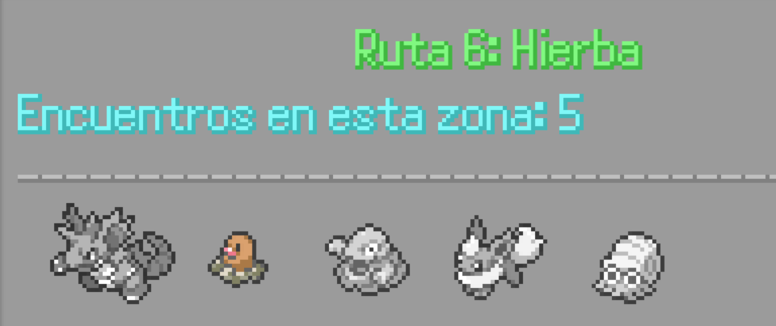
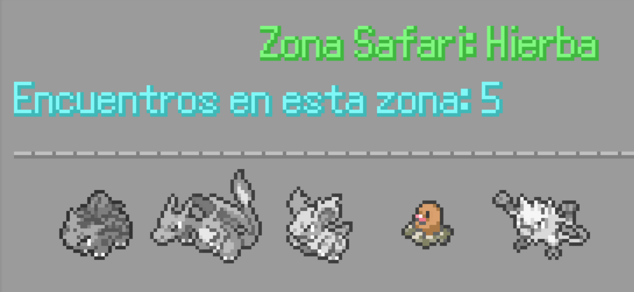
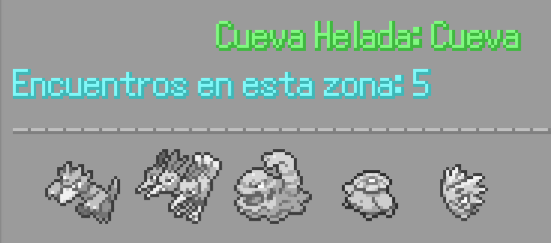
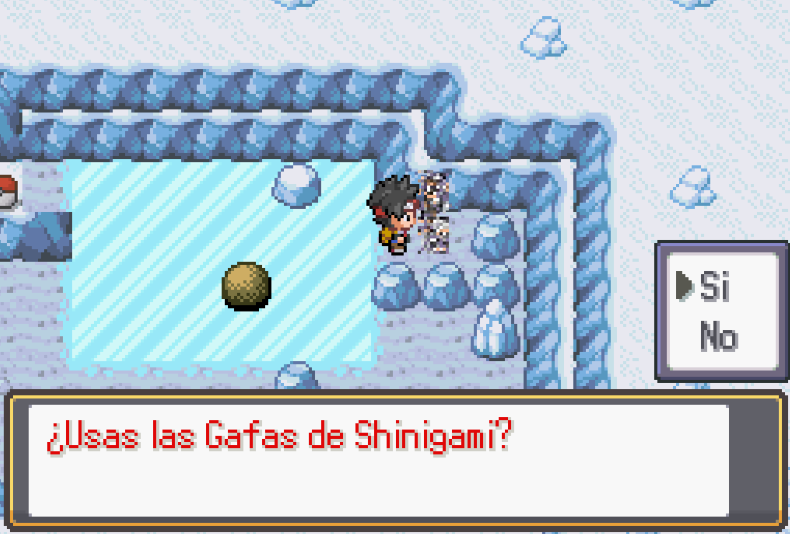
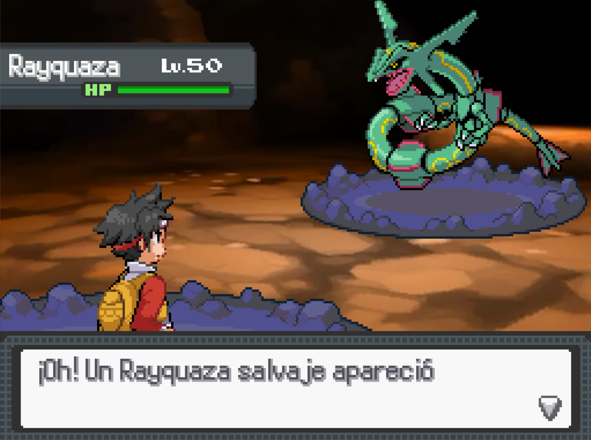

Ruta 6 / Zona Safari y Cueva Helada
En esta pequeña ruta encontrarás unas hierbas donde hacer tu captura de zona, además de encontrar a un par de hombres portando una extraña armadura... Si hablas con ellos, desbloquearás una misión.

También hacia el norta entrarás en la recepción de la Zona Safari, a la que podrás acceder pagando una cantidad de dinero, dentro dicen que puede encontrarse un Pokemoito Legendario descansando.
En el recinto encontrarás algunos objetos y una cueva, la Cueva Helada. Dentro tendrás que avanzar deslizándote sobre el hielo hasta llegar al siguiente piso, pero tendrás que seguir unas indicaciones.


Primero, tendrás que pulsar un botón oculto en la estatua del final para que caiga una roca en la entrada, entonces empújala por el agujero para poder usarla para apoyarte cuando te deslices en el piso inferior.
Esta es la estatua en la que se oculta el botón, al pulsar el botón de interacción frente a ella, la roca caerá en la entrada.
Empuja la roca hasta el agujero para que caiga al piso inferior.
La roca en el piso superior.
La roca en el piso inferior.
Al final del camino encontrarás un Pokemoito Legendario, al que solo podrás enfrentarte tras usar las Gafas Shinigami para verlo con claridad.
 
Cuando hayas capturado al Pokemoito Legendario, vuelve al Pueblo Torrijas para avanzar hasta Ciudad Mondongo cruzando el Bosque Oscuro.